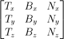

Unity Shader 学习 Bump Mapping
实现逻辑
noraml map
实现逻辑
�?种方法：1.在切线空间下计算�?.在世界空间下计算。但是由于通用性问题第二种要优于第一种，例如使用CubeMap我们要在世界空间下进行采样�?/p>在世界空间下计算
- 在顶点着色器计算从切线空间到世界空间的变换矩�?TBN矩阵 T切线 B副切�?N法线 B可以由TN叉乘获得 
- 获得切线空间下的法线纹理数据
- 将法线纹理数据从切线空间转换到世界空�?/li>
- 在顶点着色器计算从切线空间到世界空间的变换矩�?TBN矩阵 T切线 B副切�?N法线 B可以由TN叉乘获得
Coding
1
2
3
4
5
6
7
8
9
10
11
12
13
14
15
16
17
18
19
20
21
22
23
24
25
26
27
28
29
30
31
32
33
34
35
36
37
38
39
40
41
42
43
44
45
46
47
48
49
50
51
52
53
54
55
56
57
58
59
60
61
62
63
64
65
66
67
68
69
70
71
72
73
74
75
76
77
78
79
80
81
82
83
84
85
86
87
88Shader "Unlit/NoramlShader"
{
Properties
{
_MainTex ("Texture", 2D) = "white" {}
[Normal]_NormalMap("Normal Map",2D) = "bump"{}
_NormalScale("NormalScale",Range(0,1)) = 0
}
SubShader
{
Tags { "RenderType"="Opaque" }
Pass
{
HLSLPROGRAM
struct appdata
{
float4 vertex : POSITION;
float2 uv : TEXCOORD0;
float3 normal : NORMAL;
float4 tangent : TANGENT;
};
struct v2f
{
float4 pos : SV_POSITION;
float2 uv : TEXCOORD0;
float3 posWS : TEXCOORD1;
float3 nDirWS : TEXCOORD2;
float3 tDirWS : TEXCOORD3;
float3 bDirWS : TEXCOORD4;
};
CBUFFER_START(UnityPerMaterial)
real4 _MainTex_ST;
real _NormalScale;
CBUFFER_END
TEXTURE2D(_MainTex);
SAMPLER(sampler_MainTex);
TEXTURE2D(_NormalMap);
SAMPLER(sampler_NormalMap);
v2f vert (appdata v)
{
v2f o;
o.posWS = TransformObjectToWorld(v.vertex.xyz);
o.pos = TransformWorldToHClip(o.posWS);
o.uv = TRANSFORM_TEX(v.uv, _MainTex);
o.nDirWS = TransformObjectToWorldNormal(v.normal);
o.tDirWS = normalize(TransformObjectToWorldDir(v.tangent.xyz));
o.bDirWS = normalize(cross(o.nDirWS,o.tDirWS)*v.tangent.w);
return o;
}
half4 frag (v2f i) : SV_Target
{
float3x3 TBN = float3x3(i.tDirWS,i.bDirWS,i.nDirWS);
float3 nDirWS = normalize(i.nDirWS);
float4 normalMap = SAMPLE_TEXTURE2D(_NormalMap,sampler_NormalMap,i.uv);
float3 normal = UnpackNormal(normalMap);
normal.z = sqrt(1.0 - saturate(dot(normal.xy,normal.xy)));
normal = TransformTangentToWorld(normal,TBN);
normal = normalize(normal);
// 混合法线
nDirWS = lerp(nDirWS,normal,_NormalScale);
Light mainLight = GetMainLight();
real4 lightColor = real4(mainLight.color, 1);
float3 lightDir = mainLight.direction;
float nDotL = dot(nDirWS, lightDir);
float lambert = max(0.0,nDotL);
return lambert.rrrr;
}
ENDHLSL
}
}
}

T = normalize(dx/du, dy/du, dz/du)
N = T × normalize(dx/dv, dy/dv, dz/dv)
B = N × T
法线贴图的设置细节�?/p>
- 法线贴图的属�?Bump
- 贴图属�?TextureType-Noraml Map
法线贴图的优化方案�?/p>
- 使用双通道进行法线数据的处�?/li>
Bump mapping - wikipedia
[2] Unity Shader 入门精要 - 凹凸映射 - 146
[4] 庄懂的技术美术入门课(美术�?-直播录屏-�?�?/a>
[5] Tutorial 13 : Normal Mapping
关于本文
本文作�?Master Gong Sheng, 许可�?CC BY-NC 4.0.
关于本文
本文作�?Master Gong Sheng, 许可�?CC BY-NC 4.0.